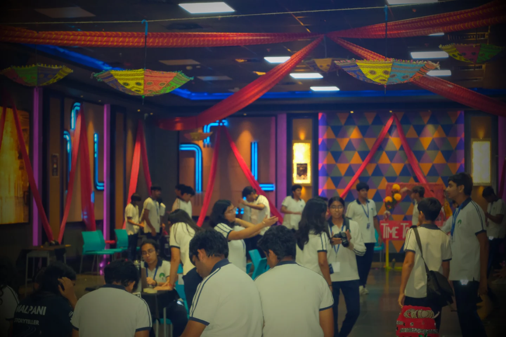
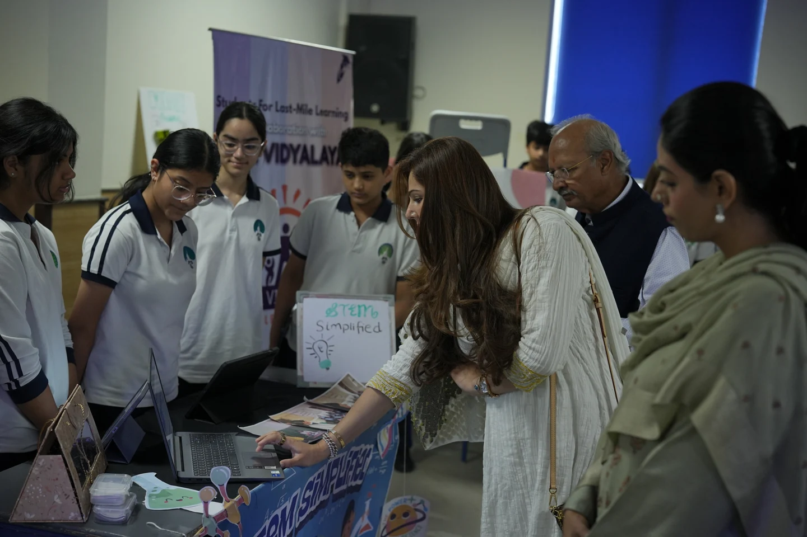
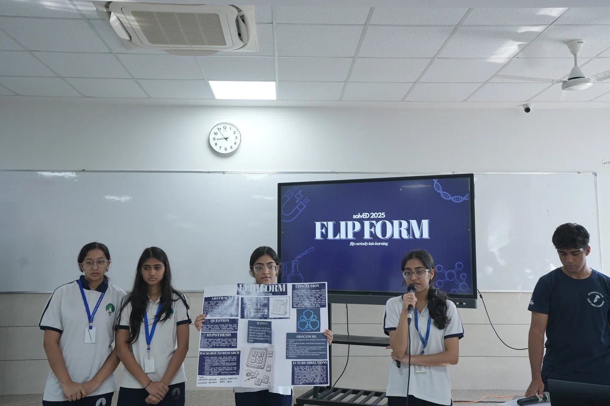

The Viking clap

During the Viking clap at school sports matches, I played the drums to set the rhythm for a crowd that clapped in time, building energy and cheering on our players through a shared school tradition.
During the Viking clap at school sports matches, I played the drums to set the rhythm for a crowd that clapped in time, building energy and cheering on our players through a shared school tradition.


As Finance & Technology Head, I led fundraising that secured $185,000 through a CSR partnership for Ekal Abhiyan, supporting one year of education for 16,500 children across 550 schools. The fundraiser received a world record, and the network spans 20 states.
SFLML also brought 2,400 students into donation drives and organized more than 30 workshops. Through these partnerships, students brought music, theatre, STEM, digital skills, career guidance, health education and financial literacy into rural schools, extending the initiative beyond fundraising to sustained educational support.

Traditional performances, art and craft activities brought rural culture into the event’s educational program.

Student teams presented their work and met partners supporting rural education, connecting the fundraiser with opportunities to contribute.

The challenge invited students to design and pitch responses to educational and infrastructure problems faced by rural children.

As Deputy Head Boy in a school of 2,550+ students, I organized a 15-school competition and five workshops on the digital divide and algorithmic bias. After ISEF, I mentored 40 research projects on questions, experiments and evidence, with 17 advancing to the IRIS National Fair.
I also helped organize the ISSO football competition and supported day-to-day school responsibilities. Alongside research mentoring, I guided students developing entrepreneurial ventures, helping them refine their ideas and work through the practical steps of building them.
At Kids Cancer Foundation, founded alongside ISEF finalists, I helped advance low-cost cancer therapeutics and donor–patient matching software to expand treatment access. The therapeutics work focused on making cancer treatment more affordable, while the matching software was intended to help connect patients with donor support. These efforts addressed both the cost of treatment and the difficulty of finding support when families needed it.
We also donated toys to hospitalized children, bringing opportunities for play into days otherwise shaped by treatment. The foundation’s wider toy and caregiver program works with partners including Mattel, Melissa & Doug, Nationwide Children’s Hospital and Cincinnati Children’s Hospital to deliver toys, art supplies and care packages to children and their families.